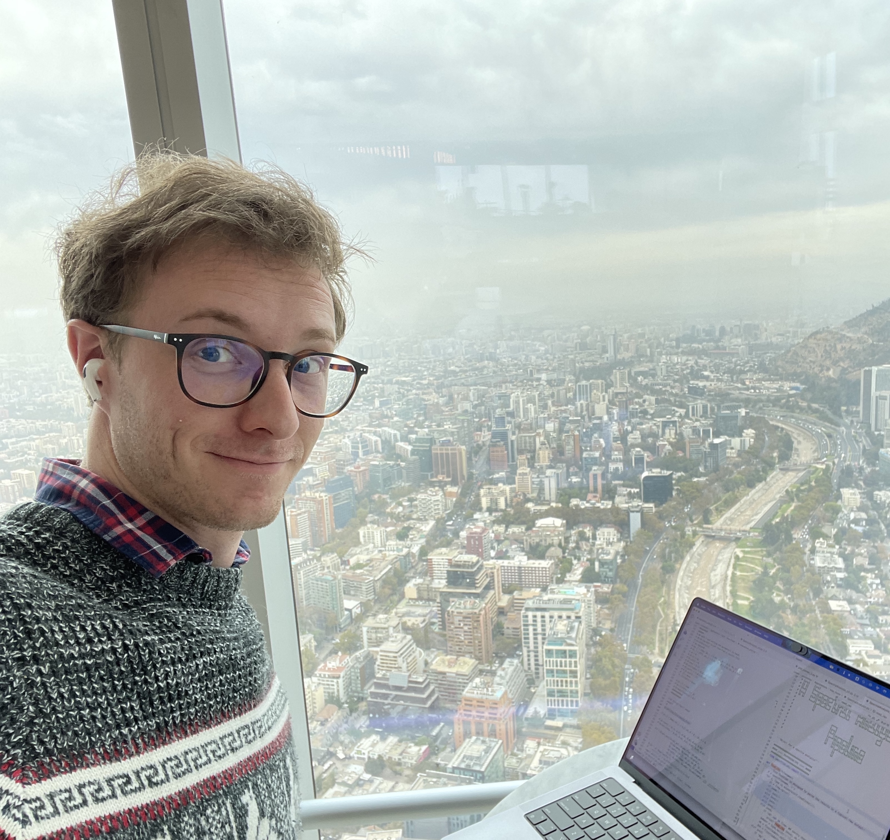

Contact

If you are interested in my research, feel free to drop me a line.
I am always happy to discuss ideas, projects and/or collaborations!
Paul I. Cristofari
{{ site.address }}
Paul I. Cristofari
{{ site.address }}
Publications
Key publications. Stay tuned for more on
NASA ADS
I will try to keep a complete list of publications on a NASA ADS library
- New Paper ! P. I. Cristofari, S. H. Saar, A. A. Vidotto, et al., A fast method for deriving relative small-scale magnetic field variations from high-resolution spectroscopy, 2026, accepted for publication in A&A
- A. K. Dupree, P. I. Cristofari, M. MacLeod, et al., Betelgeuse: Detection of the Expanding Wake of the Companion Star, 2026, ApJ, 998, 50
- S. Bellotti, P. I. Cristofari, J. R. Callingham, et al., A magnetic field study of two fast-rotating, radio-bright M dwarfs: StKM 1-1262 and V374 Peg, 2025, A&A, 704, A298
- P. I. Cristofari , J.-F. Donati, S. Bellotti, et al., Rotational modulation and long-term evolution of the small-scale magnetic fields of M dwarfs observed with SPIRou, 2025, A&A, 702, A111
- P. I. Cristofari , A. K. Dupree, A. P. Milone, et al., Spectroscopic Confirmation: Fast rotators in the young clusters NGC 1856 and NGC 1953, 2025, ApJ, 991, 165
- P. I. Cristofari , A. K. Dupree, A. P. Milone, et al., Rotation and Hα emission in a young SMC cluster: a spectroscopic view of NGC 330, 2024, ApJ, 972, 72
- P. I. Cristofari , J. -F. Donati , C. Moutou, et al., Measuring small-scale magnetic fields of 44 M dwarfs from SPIRou spectra with ZeeTurbo, 2023, MNRAS, 526, 5648
- P. I. Cristofari , J. -F. Donati , C. P. Folsom, et al., Constraining atmospheric parameters and surface magnetic fields with ZeeTurbo: an application to SPIRou spectra, 2023, MNRAS, 522, 1342
- P. I. Cristofari , J. -F. Donati , T. Masseron, et al., Estimating the atmospheric properties of 44 M dwarfs from SPIRou spectra, 2022, MNRAS, 516, 3802
- P. I. Cristofari , J. -F. Donati , T. Masseron, et al., Estimating fundamental parameters of nearby M dwarfs from SPIRou spectra, 2022, MNRAS, 511, 1893
- Bfields conference, Constraining magnetic fields of M dwarfs from high resolution spectra [Talk]
- AAS meeting, A spectroscopic view of NGC 330 [Poster]
- PLATO PSM WP12 meeting, Characterizing atmospheric parameters from high-resolution spectra [Talk]
- ExoSystèmes III, Constraining atmospehric parameters and magnetic fields with ZeeTurbo [Talk]
- International SPIRou Science Meeting, Using ZeeTurbo to constrain magnetic fields and atmospheric parameters from SPIRou spectra [Talk]
- Cool Stars 21 conference, Deriving atmospheric parameters of M dwarfs with SPIRou [poster]
- PhD days 2022, Modeling SPIRou spectra of M dwarfs: status and challenges [Talk + Poster]
- PS2E group meeting 2021, Deriving fundamental parameters of M dwarfs from SPIRou spectra [Talk]
- ExoSystèmes II conference, On the characterization of 12 M dwarfs observed in the context of the SLS [Talk]
- International SPIRou Science Meeting 2021, Advances on the characterization of M dwarfs observed in the context of the SLS [Talk]
- International SPIRou Science Meeting 2020, Telluric line correction and analysis of Gl 699 [Talk]
Contributions
Teaching
-
I regularly take on teaching duties, and supervise research projects.
Most recently, I have been a teaching assistant at Harvard College,
and supervisor several undergaduate and master's students at Leiden Observatory.